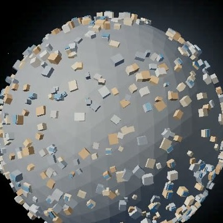
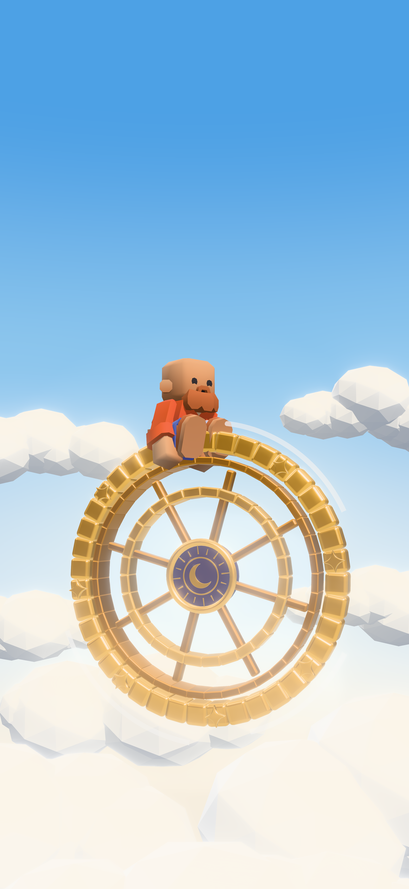

2027년에 내가 얻게 될 것 · 타로
가입·추천인 코드·결제·광고 링크 없음
2번 카드
2027년에 얻게 될 것 · 「바뀌는 해」
오래 멈춰 있던 흐름이 드디어 좋은 쪽으로 바뀌는 한 해예요.
연애늘 가던 곳이 아닌 데서 인연이 와요.
돈막혀 있던 돈이 돌기 시작해요.
일여름쯤 "이거 한번 맡아 볼래요?" 하는 제안이 올 거예요.
관계멀어졌던 사람과 우연히 다시 마주쳐서 웃으며 인사하게 돼요.

당신의 카드가 가리키는 행성은 쇼핑몰 행성이에요.
2번 「운명의 수레바퀴」 카드

열린 그림을 길게 눌러 저장하면 사진 앱에 담겨요.
인스타 앱 안에서 저장이 안 되면 오른쪽 위 ⋯ → 외부 브라우저로 열어 주세요.
팔로우하시면 DM으로 풀이 전문을 보내 드려요.
요즘 당신의 장면, 연애·돈·일·관계 자세한 풀이, 쇼핑몰 행성 이야기까지 적어 두었어요.
팔로우하신 뒤 DM에서 [풀이 전문 보기]를 눌러 주세요.
2027년에 얻게 될 것은 「회복의 해」. 지쳐 있던 마음이 다시 숨을 쉬고, 오래 빌어 온 소원 하나가 가까워지는 한 해예요.
가리키는 행성은 온천 행성이에요.
2027년에 얻게 될 것은 「잘되는 해」. 해 온 일이 환하게 빛을 보고, 스스로가 좋아지는 한 해예요.
가리키는 행성은 해바라기 행성이에요.
2027년에 얻게 될 것은 「좋은 선택의 해」. 마음이 통하는 사람을 만나고, 망설이던 선택을 마음 가는 쪽으로 하게 되는 한 해예요.
가리키는 행성은 반딧불 호수 행성이에요.
더 재밌게 고치려고, 이름 없이 누른 버튼·머문 시간만 세고 있어요. 쓴 글·아이디는 보내지 않아요. 자세히